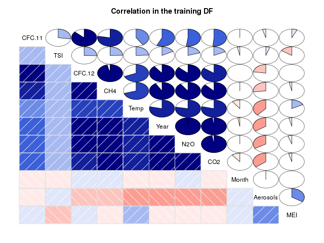

Homework Week 2
Homework week 2.
1 Climate Change
There have been many studies documenting that the average global temperature has been increasing over the last century. The consequences of a continued rise in global temperature will be dire. Rising sea levels and an increased frequency of extreme weather events will affect billions of people.
In this problem, we will attempt to study the relationship between average global temperature and several other factors.
The file climate_change.csv contains climate data from May 1983 to December 2008. The available variables include:
- Year: the observation year.
- Month: the observation month.
- Temp: the difference in degrees Celsius between the average global temperature in that period and a reference value. This data comes from the Climatic Research Unit at the University of East Anglia.
- CO2, N2O, CH4, CFC.11, CFC.12: atmospheric concentrations of carbon
dioxide (CO2), nitrous oxide (N2O), methane (CH4),
trichlorofluoromethane (CCl3F; commonly referred to as CFC-11) and
dichlorodifluoromethane (CCl2F2; commonly referred to as CFC-12),
respectively. This data comes from the ESRL/NOAA Global Monitoring
Division.
- CO2, N2O and CH4 are expressed in ppmv (parts per million by volume – i.e., 397 ppmv of CO2 means that CO2 constitutes 397 millionths of the total volume of the atmosphere)
- CFC.11 and CFC.12 are expressed in ppbv (parts per billion by volume).
- Aerosols: the mean stratospheric aerosol optical depth at 550 nm. This variable is linked to volcanoes, as volcanic eruptions result in new particles being added to the atmosphere, which affect how much of the sun's energy is reflected back into space. This data is from the Godard Institute for Space Studies at NASA.
- TSI: the total solar irradiance (TSI) in \(\frac{W}{m^2}\) (the rate at which the sun's energy is deposited per unit area). Due to sunspots and other solar phenomena, the amount of energy that is given off by the sun varies substantially with time. This data is from the SOLARIS-HEPPA project website.
- MEI: multivariate El Nino Southern Oscillation index (MEI), a measure of the strength of the El Nino/La Nina-Southern Oscillation (a weather effect in the Pacific Ocean that affects global temperatures). This data comes from the ESRL/NOAA Physical Sciences Division.
1.1 Problem 1.1 - Creating Our First Model (2 points possible)
We are interested in how changes in these variables affect future temperatures, as well as how well these variables explain temperature changes so far. To do this, first read the dataset climate_change.csv into R.
Then, split the data into a training set, consisting of all the observations up to and including 2006, and a testing set consisting of the remaining years (hint: use subset). A training set refers to the data that will be used to build the model (this is the data we give to the lm() function), and a testing set refers to the data we will use to test our predictive ability.
1.1.1 Download the data set
In this part we can download the data
library(parallel) if(!file.exists("../data")) { dir.create("../data") } fileUrl <- c("https://courses.edx.org/asset-v1:MITx+15.071x_2a+2T2015+type@asset+block/climate_change.csv") fileName <- c("climate_change.csv") dataPath <- "../data" filePath <- paste(dataPath, fileName, sep = "/") if(!file.exists(filePath)) { download.file(fileUrl, destfile = filePath, method = "curl") } list.files("../data")
[1] "AnonymityPoll.csv" "BoeingStock.csv" "CPSData.csv" [4] "CocaColaStock.csv" "CountryCodes.csv" "GEStock.csv" [7] "IBMStock.csv" "MetroAreaCodes.csv" "NBA_test.csv" [10] "NBA_train.csv" "ProcterGambleStock.csv" "README.md" [13] "USDA.csv" "WHO.csv" "WHO_Europe.csv" [16] "baseball.csv" "climate_change.csv" "mvtWeek1.csv" [19] "wine.csv" "wine_test.csv"
1.1.2 Loading the data
writeLines("\n :: Read in data") climateChange <- read.table("../data/climate_change.csv", sep = ",", header = TRUE) str(climateChange) summary(climateChange)
:: Read in data
'data.frame': 308 obs. of 11 variables:
$ Year : int 1983 1983 1983 1983 1983 1983 1983 1983 1984 1984 ...
$ Month : int 5 6 7 8 9 10 11 12 1 2 ...
$ MEI : num 2.556 2.167 1.741 1.13 0.428 ...
$ CO2 : num 346 346 344 342 340 ...
$ CH4 : num 1639 1634 1633 1631 1648 ...
$ N2O : num 304 304 304 304 304 ...
$ CFC.11 : num 191 192 193 194 194 ...
$ CFC.12 : num 350 352 354 356 357 ...
$ TSI : num 1366 1366 1366 1366 1366 ...
$ Aerosols: num 0.0863 0.0794 0.0731 0.0673 0.0619 0.0569 0.0524 0.0486 0.0451 0.0416 ...
$ Temp : num 0.109 0.118 0.137 0.176 0.149 0.093 0.232 0.078 0.089 0.013 ...
Year Month MEI CO2
Min. :1983 Min. : 1.000 Min. :-1.6350 Min. :340.2
1st Qu.:1989 1st Qu.: 4.000 1st Qu.:-0.3987 1st Qu.:353.0
Median :1996 Median : 7.000 Median : 0.2375 Median :361.7
Mean :1996 Mean : 6.552 Mean : 0.2756 Mean :363.2
3rd Qu.:2002 3rd Qu.:10.000 3rd Qu.: 0.8305 3rd Qu.:373.5
Max. :2008 Max. :12.000 Max. : 3.0010 Max. :388.5
CH4 N2O CFC.11 CFC.12 TSI
Min. :1630 Min. :303.7 Min. :191.3 Min. :350.1 Min. :1365
1st Qu.:1722 1st Qu.:308.1 1st Qu.:246.3 1st Qu.:472.4 1st Qu.:1366
Median :1764 Median :311.5 Median :258.3 Median :528.4 Median :1366
Mean :1750 Mean :312.4 Mean :252.0 Mean :497.5 Mean :1366
3rd Qu.:1787 3rd Qu.:317.0 3rd Qu.:267.0 3rd Qu.:540.5 3rd Qu.:1366
Max. :1814 Max. :322.2 Max. :271.5 Max. :543.8 Max. :1367
Aerosols Temp
Min. :0.00160 Min. :-0.2820
1st Qu.:0.00280 1st Qu.: 0.1217
Median :0.00575 Median : 0.2480
Mean :0.01666 Mean : 0.2568
3rd Qu.:0.01260 3rd Qu.: 0.4073
Max. :0.14940 Max. : 0.7390
Splitting the data in two data sets for training and test data frames.
First data frame for training purposes:
training <- subset(climateChange, Year <= 2006) writeLines("\n :: Exploratory data analysis for the training dataframe") str(training) summary(training)
:: Exploratory data analysis for the training dataframe
'data.frame': 284 obs. of 11 variables:
$ Year : int 1983 1983 1983 1983 1983 1983 1983 1983 1984 1984 ...
$ Month : int 5 6 7 8 9 10 11 12 1 2 ...
$ MEI : num 2.556 2.167 1.741 1.13 0.428 ...
$ CO2 : num 346 346 344 342 340 ...
$ CH4 : num 1639 1634 1633 1631 1648 ...
$ N2O : num 304 304 304 304 304 ...
$ CFC.11 : num 191 192 193 194 194 ...
$ CFC.12 : num 350 352 354 356 357 ...
$ TSI : num 1366 1366 1366 1366 1366 ...
$ Aerosols: num 0.0863 0.0794 0.0731 0.0673 0.0619 0.0569 0.0524 0.0486 0.0451 0.0416 ...
$ Temp : num 0.109 0.118 0.137 0.176 0.149 0.093 0.232 0.078 0.089 0.013 ...
Year Month MEI CO2
Min. :1983 Min. : 1.000 Min. :-1.5860 Min. :340.2
1st Qu.:1989 1st Qu.: 4.000 1st Qu.:-0.3230 1st Qu.:352.3
Median :1995 Median : 7.000 Median : 0.3085 Median :359.9
Mean :1995 Mean : 6.556 Mean : 0.3419 Mean :361.4
3rd Qu.:2001 3rd Qu.:10.000 3rd Qu.: 0.8980 3rd Qu.:370.6
Max. :2006 Max. :12.000 Max. : 3.0010 Max. :385.0
CH4 N2O CFC.11 CFC.12 TSI
Min. :1630 Min. :303.7 Min. :191.3 Min. :350.1 Min. :1365
1st Qu.:1716 1st Qu.:307.7 1st Qu.:249.6 1st Qu.:462.5 1st Qu.:1366
Median :1759 Median :310.8 Median :260.4 Median :522.1 Median :1366
Mean :1746 Mean :311.7 Mean :252.5 Mean :494.2 Mean :1366
3rd Qu.:1782 3rd Qu.:316.1 3rd Qu.:267.4 3rd Qu.:541.0 3rd Qu.:1366
Max. :1808 Max. :320.5 Max. :271.5 Max. :543.8 Max. :1367
Aerosols Temp
Min. :0.00160 Min. :-0.2820
1st Qu.:0.00270 1st Qu.: 0.1180
Median :0.00620 Median : 0.2325
Mean :0.01772 Mean : 0.2478
3rd Qu.:0.01400 3rd Qu.: 0.4065
Max. :0.14940 Max. : 0.7390
First data frame for test purposes:
test <- subset(climateChange, Year > 2006)
str(test)
summary(test)
'data.frame': 24 obs. of 11 variables:
$ Year : int 2007 2007 2007 2007 2007 2007 2007 2007 2007 2007 ...
$ Month : int 1 2 3 4 5 6 7 8 9 10 ...
$ MEI : num 0.974 0.51 0.074 -0.049 0.183 ...
$ CO2 : num 383 384 385 386 387 ...
$ CH4 : num 1800 1803 1803 1802 1796 ...
$ N2O : num 321 321 321 321 320 ...
$ CFC.11 : num 248 248 248 248 247 ...
$ CFC.12 : num 539 539 539 539 538 ...
$ TSI : num 1366 1366 1366 1366 1366 ...
$ Aerosols: num 0.0054 0.0051 0.0045 0.0045 0.0041 0.004 0.004 0.0041 0.0042 0.0041 ...
$ Temp : num 0.601 0.498 0.435 0.466 0.372 0.382 0.394 0.358 0.402 0.362 ...
Year Month MEI CO2
Min. :2007 Min. : 1.00 Min. :-1.6350 Min. :380.9
1st Qu.:2007 1st Qu.: 3.75 1st Qu.:-1.0437 1st Qu.:383.1
Median :2008 Median : 6.50 Median :-0.5305 Median :384.5
Mean :2008 Mean : 6.50 Mean :-0.5098 Mean :384.7
3rd Qu.:2008 3rd Qu.: 9.25 3rd Qu.:-0.0360 3rd Qu.:386.1
Max. :2008 Max. :12.00 Max. : 0.9740 Max. :388.5
CH4 N2O CFC.11 CFC.12 TSI
Min. :1772 Min. :320.3 Min. :244.1 Min. :534.9 Min. :1366
1st Qu.:1792 1st Qu.:320.6 1st Qu.:244.6 1st Qu.:535.1 1st Qu.:1366
Median :1798 Median :321.3 Median :246.2 Median :537.0 Median :1366
Mean :1797 Mean :321.1 Mean :245.9 Mean :536.7 Mean :1366
3rd Qu.:1804 3rd Qu.:321.4 3rd Qu.:246.6 3rd Qu.:537.4 3rd Qu.:1366
Max. :1814 Max. :322.2 Max. :248.4 Max. :539.2 Max. :1366
Aerosols Temp
Min. :0.003100 Min. :0.074
1st Qu.:0.003600 1st Qu.:0.307
Median :0.004100 Median :0.380
Mean :0.004071 Mean :0.363
3rd Qu.:0.004500 3rd Qu.:0.414
Max. :0.005400 Max. :0.601
1.1.3 Question a
Next, build a linear regression model to predict the dependent variable Temp, using MEI, CO2, CH4, N2O, CFC.11, CFC.12, TSI, and Aerosols as independent variables (Year and Month should NOT be used in the model). Use the training set to build the model.
writeLines("\n :: Linear regression model for Climate Change") tempReg <- lm(Temp ~ MEI + CO2 + CH4 + N2O + CFC.11 + CFC.12 + TSI + Aerosols, data = training) summary(tempReg)
:: Linear regression model for Climate Change
Call:
lm(formula = Temp ~ MEI + CO2 + CH4 + N2O + CFC.11 + CFC.12 +
TSI + Aerosols, data = training)
Residuals:
Min 1Q Median 3Q Max
-0.25888 -0.05913 -0.00082 0.05649 0.32433
Coefficients:
Estimate Std. Error t value Pr(>|t|)
(Intercept) -1.246e+02 1.989e+01 -6.265 1.43e-09 ***
MEI 6.421e-02 6.470e-03 9.923 < 2e-16 ***
CO2 6.457e-03 2.285e-03 2.826 0.00505 **
CH4 1.240e-04 5.158e-04 0.240 0.81015
N2O -1.653e-02 8.565e-03 -1.930 0.05467 .
CFC.11 -6.631e-03 1.626e-03 -4.078 5.96e-05 ***
CFC.12 3.808e-03 1.014e-03 3.757 0.00021 ***
TSI 9.314e-02 1.475e-02 6.313 1.10e-09 ***
Aerosols -1.538e+00 2.133e-01 -7.210 5.41e-12 ***
---
Signif. codes: 0 '***' 0.001 '**' 0.01 '*' 0.05 '.' 0.1 ' ' 1
Residual standard error: 0.09171 on 275 degrees of freedom
Multiple R-squared: 0.7509, Adjusted R-squared: 0.7436
F-statistic: 103.6 on 8 and 275 DF, p-value: < 2.2e-16
Enter the model R2 (the "Multiple R-squared" value):
1.1.3.1 Answer
0.7509
Explanation
First, read in the data and split it using the subset command:
climate = read.csv("climate_change.csv")
train = subset(climate, Year <= 2006)
test = subset(climate, Year > 2006)
Then, you can create the model using the command:
climatelm = lm(Temp ~ MEI + CO2 + CH4 + N2O + CFC.11 + CFC.12 + TSI + Aerosols, data=train)
Lastly, look at the model using summary(climatelm). The Multiple R-squared value is 0.7509.
1.2 Problem 1.2 - Creating Our First Model (1 point possible)
Which variables are significant in the model? We will consider a variable signficant only if the p-value is below 0.05. (Select all that apply.)
1.2.1 Answer
If you look at the model we created in the previous problem using summary(climatelm), all of the variables have at least one star except for CH4 and N2O. So MEI, CO2, CFC.11, CFC.12, TSI, and Aerosols are all significant.
1.3 Problem 2.1 - Understanding the Model (1 point possible)
Current scientific opinion is that nitrous oxide and CFC-11 are greenhouse gases: gases that are able to trap heat from the sun and contribute to the heating of the Earth. However, the regression coefficients of both the N2O and CFC-11 variables are negative, indicating that increasing atmospheric concentrations of either of these two compounds is associated with lower global temperatures.
Which of the following is the simplest correct explanation for this contradiction?
cor(training, use="complete.obs")
Year Month MEI CO2 CH4
Year 1.00000000 -0.0279419602 -0.0369876842 0.98274939 0.91565945
Month -0.02794196 1.0000000000 0.0008846905 -0.10673246 0.01856866
MEI -0.03698768 0.0008846905 1.0000000000 -0.04114717 -0.03341930
CO2 0.98274939 -0.1067324607 -0.0411471651 1.00000000 0.87727963
CH4 0.91565945 0.0185686624 -0.0334193014 0.87727963 1.00000000
N2O 0.99384523 0.0136315303 -0.0508197755 0.97671982 0.89983864
CFC.11 0.56910643 -0.0131112236 0.0690004387 0.51405975 0.77990402
CFC.12 0.89701166 0.0006751102 0.0082855443 0.85268963 0.96361625
TSI 0.17030201 -0.0346061935 -0.1544919227 0.17742893 0.24552844
Aerosols -0.34524670 0.0148895406 0.3402377871 -0.35615480 -0.26780919
Temp 0.78679714 -0.0998567411 0.1724707512 0.78852921 0.70325502
N2O CFC.11 CFC.12 TSI Aerosols
Year 0.99384523 0.56910643 0.8970116635 0.17030201 -0.34524670
Month 0.01363153 -0.01311122 0.0006751102 -0.03460619 0.01488954
MEI -0.05081978 0.06900044 0.0082855443 -0.15449192 0.34023779
CO2 0.97671982 0.51405975 0.8526896272 0.17742893 -0.35615480
CH4 0.89983864 0.77990402 0.9636162478 0.24552844 -0.26780919
N2O 1.00000000 0.52247732 0.8679307757 0.19975668 -0.33705457
CFC.11 0.52247732 1.00000000 0.8689851828 0.27204596 -0.04392120
CFC.12 0.86793078 0.86898518 1.0000000000 0.25530281 -0.22513124
TSI 0.19975668 0.27204596 0.2553028138 1.00000000 0.05211651
Aerosols -0.33705457 -0.04392120 -0.2251312440 0.05211651 1.00000000
Temp 0.77863893 0.40771029 0.6875575483 0.24338269 -0.38491375
Temp
Year 0.78679714
Month -0.09985674
MEI 0.17247075
CO2 0.78852921
CH4 0.70325502
N2O 0.77863893
CFC.11 0.40771029
CFC.12 0.68755755
TSI 0.24338269
Aerosols -0.38491375
Temp 1.00000000

Figure 1: Correlation plot of the climate change variables
The correlation plot shows a strong correlation between \(N_2 O\) and and \(CO_2\) in one hand, in other hand \(CFC.11\) is highly correlated with \(CFC.12\) and \(CH_4\).
1.3.1 Answer
The linear correlation of N2O and CFC.11 with other variables in the data set is quite large. The first explanation does not seem correct, as the warming effect of nitrous oxide and CFC-11 are well documented, and our regression analysis is not enough to disprove it. The second explanation is unlikely, as we have estimated eight coefficients and the intercept from 284 observations.
1.4 Problem 2.2 - Understanding the Model (2 points possible)
Compute the correlations between all the variables in the training set.
1.4.1 Question a
Which of the following independent variables is \(N_2O\) highly correlated with (absolute correlation greater than 0.7)? Select all that apply.
1.4.1.1 Answer
CO2 CH4 CFC.12
1.4.2 Question b
Which of the following independent variables is \(CFC.11\) highly correlated with? Select all that apply.
CH4 CFC.12
Explanation
You can calculate all correlations at once using cor(train) where train is the name of the training data set.
1.5 Problem 3 - Simplifying the Model (2 points possible)
Given that the correlations are so high, let us focus on the \(N_2O\) variable and build a model with only MEI, TSI, Aerosols and \(N_2O\) as independent variables. Remember to use the training set to build the model.
writeLines("\n :: Linear regression model for Climate Change") tempReg2 <- lm(Temp ~ MEI + TSI + Aerosols + N2O, data = training) summary(tempReg2)
:: Linear regression model for Climate Change
Call:
lm(formula = Temp ~ MEI + TSI + Aerosols + N2O, data = training)
Residuals:
Min 1Q Median 3Q Max
-0.27916 -0.05975 -0.00595 0.05672 0.34195
Coefficients:
Estimate Std. Error t value Pr(>|t|)
(Intercept) -1.162e+02 2.022e+01 -5.747 2.37e-08 ***
MEI 6.419e-02 6.652e-03 9.649 < 2e-16 ***
TSI 7.949e-02 1.487e-02 5.344 1.89e-07 ***
Aerosols -1.702e+00 2.180e-01 -7.806 1.19e-13 ***
N2O 2.532e-02 1.311e-03 19.307 < 2e-16 ***
---
Signif. codes: 0 '***' 0.001 '**' 0.01 '*' 0.05 '.' 0.1 ' ' 1
Residual standard error: 0.09547 on 279 degrees of freedom
Multiple R-squared: 0.7261, Adjusted R-squared: 0.7222
F-statistic: 184.9 on 4 and 279 DF, p-value: < 2.2e-16
1.5.1 Question a
Enter the coefficient of \(N_2O\) in this reduced model:
1.5.1.1 Answer
2.532e-02
1.5.2 Question b
(How does this compare to the coefficient in the previous model with all of the variables?)
Enter the model \(R^2\):
1.5.2.1 Answer
0.7261
Explanation
We can create this simplified model with the command:
LinReg = lm(Temp ~ MEI + N2O + TSI + Aerosols, data=train)
You can get the coefficient for N2O and the model R-squared by typing summary(LinReg).
We have observed that, for this problem, when we remove many variables the sign of N2O flips. The model has not lost a lot of explanatory power (the model R2 is 0.7261 compared to 0.7509 previously) despite removing many variables. As discussed in lecture, this type of behavior is typical when building a model where many of the independent variables are highly correlated with each other. In this particular problem many of the variables (CO2, CH4, N2O, CFC.11 and CFC.12) are highly correlated, since they are all driven by human industrial development.
1.6 Problem 4 - Automatically Building the Model (4 points possible)
We have many variables in this problem, and as we have seen above, dropping some from the model does not decrease model quality. R provides a function, step, that will automate the procedure of trying different combinations of variables to find a good compromise of model simplicity and \(R^2\). This trade-off is formalized by the Akaike information criterion (AIC) - it can be informally thought of as the quality of the model with a penalty for the number of variables in the model.
The step function has one argument - the name of the initial model. It returns a simplified model. Use the step function in R to derive a new model, with the full model as the initial model (HINT: If your initial full model was called "climateLM", you could create a new model with the step function by typing step(climateLM). Be sure to save your new model to a variable name so that you can look at the summary. For more information about the step function, type ?step in your R console.)
writeLines("\n :: Optimizing the linear regression model for Climate Change") tempReg3 <- step(tempReg) summary(tempReg3)
:: Optimizing the linear regression model for Climate Change
Start: AIC=-1348.16
Temp ~ MEI + CO2 + CH4 + N2O + CFC.11 + CFC.12 + TSI + Aerosols
Df Sum of Sq RSS AIC
- CH4 1 0.00049 2.3135 -1350.1
<none> 2.3130 -1348.2
- N2O 1 0.03132 2.3443 -1346.3
- CO2 1 0.06719 2.3802 -1342.0
- CFC.12 1 0.11874 2.4318 -1335.9
- CFC.11 1 0.13986 2.4529 -1333.5
- TSI 1 0.33516 2.6482 -1311.7
- Aerosols 1 0.43727 2.7503 -1301.0
- MEI 1 0.82823 3.1412 -1263.2
Step: AIC=-1350.1
Temp ~ MEI + CO2 + N2O + CFC.11 + CFC.12 + TSI + Aerosols
Df Sum of Sq RSS AIC
<none> 2.3135 -1350.1
- N2O 1 0.03133 2.3448 -1348.3
- CO2 1 0.06672 2.3802 -1344.0
- CFC.12 1 0.13023 2.4437 -1336.5
- CFC.11 1 0.13938 2.4529 -1335.5
- TSI 1 0.33500 2.6485 -1313.7
- Aerosols 1 0.43987 2.7534 -1302.7
- MEI 1 0.83118 3.1447 -1264.9
Call:
lm(formula = Temp ~ MEI + CO2 + N2O + CFC.11 + CFC.12 + TSI +
Aerosols, data = training)
Residuals:
Min 1Q Median 3Q Max
-0.25770 -0.05994 -0.00104 0.05588 0.32203
Coefficients:
Estimate Std. Error t value Pr(>|t|)
(Intercept) -1.245e+02 1.985e+01 -6.273 1.37e-09 ***
MEI 6.407e-02 6.434e-03 9.958 < 2e-16 ***
CO2 6.402e-03 2.269e-03 2.821 0.005129 **
N2O -1.602e-02 8.287e-03 -1.933 0.054234 .
CFC.11 -6.609e-03 1.621e-03 -4.078 5.95e-05 ***
CFC.12 3.868e-03 9.812e-04 3.942 0.000103 ***
TSI 9.312e-02 1.473e-02 6.322 1.04e-09 ***
Aerosols -1.540e+00 2.126e-01 -7.244 4.36e-12 ***
---
Signif. codes: 0 '***' 0.001 '**' 0.01 '*' 0.05 '.' 0.1 ' ' 1
Residual standard error: 0.09155 on 276 degrees of freedom
Multiple R-squared: 0.7508, Adjusted R-squared: 0.7445
F-statistic: 118.8 on 7 and 276 DF, p-value: < 2.2e-16
1.6.1 Question a
Enter the R2 value of the model produced by the step function:
1.6.1.1 Answer
Only \(CH_4\) was removed.
It is interesting to note that the step function does not address the collinearity of the variables, except that adding highly correlated variables will not improve the R2 significantly. The consequence of this is that the step function will not necessarily produce a very interpretable model - just a model that has balanced quality and simplicity for a particular weighting of quality and simplicity (AIC).
1.7 Problem 5 - Testing on Unseen Data (2 points possible)
We have developed an understanding of how well we can fit a linear regression to the training data, but does the model quality hold when applied to unseen data?
Using the model produced from the step function, calculate temperature predictions for the testing data set, using the predict function.
writeLines("\n :: Make test set predictions") predictTest <- predict(tempReg3, newdata = test) predictTest
:: Make test set predictions
285 286 287 288 289 290 291 292
0.4677808 0.4435404 0.4265541 0.4299162 0.4455113 0.4151422 0.4097367 0.3839390
293 294 295 296 297 298 299 300
0.3255595 0.3274147 0.3231401 0.3316704 0.3522134 0.3313129 0.3142112 0.3703410
301 302 303 304 305 306 307 308
0.4162213 0.4391458 0.4237965 0.3913679 0.3587615 0.3451991 0.3607087 0.3638076
But to get a measure of the predictions goodness of fit, we need to calculate the out of sample R-squared.
writeLines("\n :: Compute out-of-sample R^2") SSE <- sum((predictTest - test$Temp)^2) SST <- sum((mean(training$Temp) - test$Temp)^2) R2 <- 1 - (SSE/SST) R2
:: Compute out-of-sample R^2 [1] 0.6286051
Enter the testing set R2:
1.7.1 Answer
0.6286051
Explanation
The R code to calculate the R-squared can be written as follows (your variable names may be different):
tempPredict = predict(climateStep, newdata = test)
SSE = sum((tempPredict - test$Temp)^2)
SST = sum( (mean(train$Temp) - test$Temp)^2)
R2 = 1 - SSE/SST